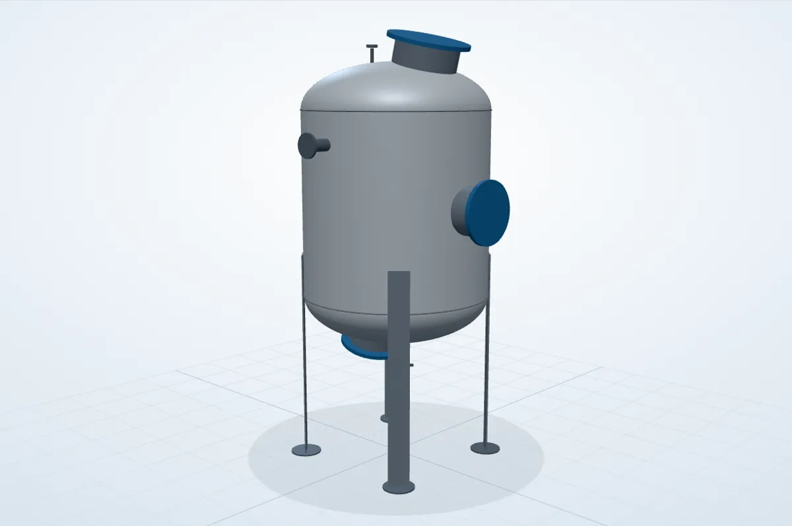

Fuel & Diesel Tanks
Tank arrangements for fuel-storage and mobile/portable fueling applications, including connections, access, venting and instrumentation interfaces.
About 25 storage tanks I've designed, from 500 L to 60 KL. The work covers mechanical arrangement, capacity and geometry, nozzles and interfaces, supports, drawings and coordination with fabrication.
Tank arrangements for fuel-storage and mobile/portable fueling applications, including connections, access, venting and instrumentation interfaces.
Tank design work supporting petrol storage and fueling packages, with project-specific safety and dispensing interfaces.
Tanks for process service as well as fuel.
2D drawings, dimensions, nozzle arrangements, supports and manufacturing information prepared for fabrication and project execution.

Built in the browser from the GA dimensions above: Ø1800 shell, 1800 T/T, 2:1 heads, 4 plate legs and nozzles N1–N7. Simplified (no internals, gussets or welds). Drag to rotate, pinch or scroll to zoom.
The drawing covers the full arrangement: elevations, plan, isometric view, nozzle schedule, materials, welding, NDT and surface finish.
DESIGNED: Mechanical tank arrangement and associated engineering documentation.
PERFORMED: Dimensional and interface definition required to make the tank manufacturable and integrable with the wider package.
DELIVERED: Drawings and data ready for review, for fabrication and for fitting the tank into the wider package.
Translating the required working capacity and service into practical tank dimensions and an arrangement that fits the available package footprint.
Defining fill, drain, vent, access and equipment connection locations so the tank can interface correctly with the complete mechanical system.
Developing support arrangements and checking the tank's relationship with skids, piping, pumps, instruments and customer connection points.
Issuing clear 2D drawings with the dimensions and details fabrication needs.
I design each tank as part of the package it sits in.
That means working out how the piping connects to it, keeping access and maintenance areas usable, placing the instruments and valves, and making sure the finished assembly can be fabricated and fitted.
Only a selection of the tanks is shown here. Customer names, controlled drawings and confidential project information are left out where required.
← Back to projects